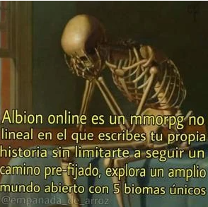

Yo me describo a mi mismo como una persona alta , y asi como aveces soy algo callado
tambien hay otros momentos en los que no lo soy , soy tambien una persona que al menos
como yo me veo soy alguien muy estricto al menos conmigo mismo y tambien soy algo inteligente

que basado bro
mueran los negros porfavor dejen de estar en la existencia